Tiere
| Website: | Schulische Weiterbildung & Lernwelt @ VHS Essen |
| Kurs: | 1./2. Fachsemester Turbo 1 Frau Rollhäuser |
| Buch: | Tiere |
| Gedruckt von: | Robin Fehlhaber |
| Datum: | Samstag, 19. September 2026, 19:58 |
1. Haus- und Nutztiere
In vielen tausend Jahren sind durch Zähmung und Züchtung aus wild
lebenden Vorfahren unsere Haus- und Nutztiere entstanden. In allen
Ländern der Erde helfen Tiere dem Menschen bei der Arbeit. Als Zug- und
Lasttiere sind sie auch heute noch vielfach unverzichtbar. Aber auch für
unsere Ernährung spielen sie eine große Rolle. Einen großen Platz
nehmen die Haustiere in unserem Leben ein. Sie werden oft als
zusätzliches Familienmitglied angesehen. Wenn Menschen
Tiere halten, übernehmen sie große Verantwortung.
1.1. Vom Wolf zum Hund
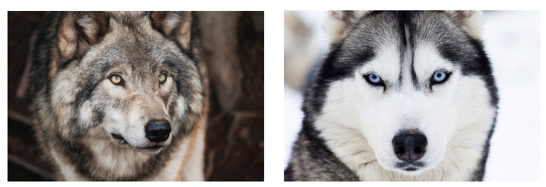
1.2. Übung: Mensch und Hund

Aufgabe 1: Erklären Sie den Begriff Zähmung.
Aufgabe 2: Beschreiben Sie mithilfe der obigen Abbildung die Vorgehensweise bei der Züchtung von Hunderassen.
Aufgabe 3: Leiten Sie aus der Lebensweise von Wölfen ab, worauf man bei der Hundehaltung achten muss.
Aufgabe 4: Stellen Sie Vermutungen an, warum der Mensch einen Hund mit kurzen Beinen und einem lang gestrecken Körper gezüchtet hat.
1.3. Lösung
Aufgabe 1: Bei der Zähmung werden wilde Tiere, die nicht mit dem Mensch vertraut sind oder diesen als Bedrohung ansehen, an die Anwesenheit des Menschen gewöhnt.
Aufgabe 2: Bei der Züchtung werden Tiere gepaart, deren besonderen Merkmale (hier: kurze Beine) weitergegeben werden sollen. Dazu paart man zwei Elterntiere und wählt die Kinder aus, die die gewünschten Merkmale aufweisen. Diese Kinder werden dann wieder verpaart. Der Vorgang wird solange wiederholt, bis alle Nachkommen das gewünschte Merkmal (kurze Beine) aufweisen. Dieser Prozess kann viele Jahrzehnte dauern.
Aufgabe 3:
- Wölfe leben in Rudeln und sind sehr sozial. Hunde brauchen daher eine menschlische Familie, die das Rudel ersetzt und dürfen nicht isoliert ihr gehalten werden.
- Wie Wölfe kommunizieren Hunde über Körpersprache, Bellen, Knurren und Jaulen. Hundehalter müssen lernen, diese Signale zu lesen, um Konflikte zu vermeiden und die Bedürfnisse des Hundes zu verstehen.
- Wölfe haben große Reviere und sind Hetzjäger, daher brauchen sie ausreichend Auslauf und Bewegung.
- Wölfe sind Jäger und auch viele Hunde haben noch einen Jagdtrieb. Mentale Auslastung, Schnüffelspiele und das Training des Rückrufs sind daher sehr wichtig, um den natürlichen Drang zu kontrollieren.
- Wölfe sind Raubtiere, deren Nahrung hauptsächlich aus Fleisch besteht. Deshalb ist eine proteinreiche Ernährung für Hunde sehr wichtig.
1.4. Hund
Ein weiblicher Hund wird als Hündin bezeichnet. Einen männlichen Hund nennt man Rüden. Die Jungtiere von Hunden heißen Welpen.
Genau wie Menschen haben auch Hunde eine bewegliche Wirbelsäule und zählen somit zu den Wirbeltieren.
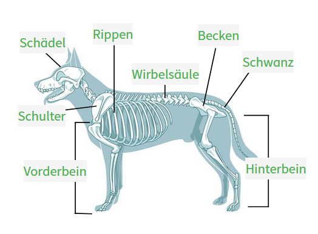
Die Beine von Hunden werden auch Läufe genannt. Der Schwanz dient dazu in Kurven das Gleichgewicht zu halten. Er wird auch als Rute bezeichnet.
.png)
Das Gebiss von Hunden und Wölfen ist ein Raubtiergebiss. Da sie sich von anderen Tieren ernähren nennt man sie auch Fleischfresser. Mit den großen Fangzähnen können sie ihre Beute erfassen und festhalten. Die hinteren Backenzähne werden auch Reißzähne genannt. Mit ihnen können Hunde sogar Knochen durchtrennen. Mit den vorderen Schneidezähnen nagen sie Fleischreste von Knochen der Beute ab.
1.5. Übung: Körpersprache

Aufgabe 1: Beschreiben Sie die verschiedenen Haltungen von Wolf und Hund. Gehen Sie dabei vor allem auf die Ohren, den Schwanz und die allgemeine Körperhaltung ein.
Aufgabe 2: Recherchieren Sie im Internet, wann ein Hund das oben abgebildete Verhalten zeigt.
Aufgabe 3: Erklären Sie, warum es wichtig ist, dass Hundebesitzer sich über die Körpersprache von Hunden informieren.
1.6. Lösung

Hundebesitzer sollten die Körpersprache von Hunden kennen, damit sie die Stimmung und mögliches Verhalten ihres Hundes abschätzen und gegebenenfalls frühzeitig eingreifen können.
2. Waldtiere
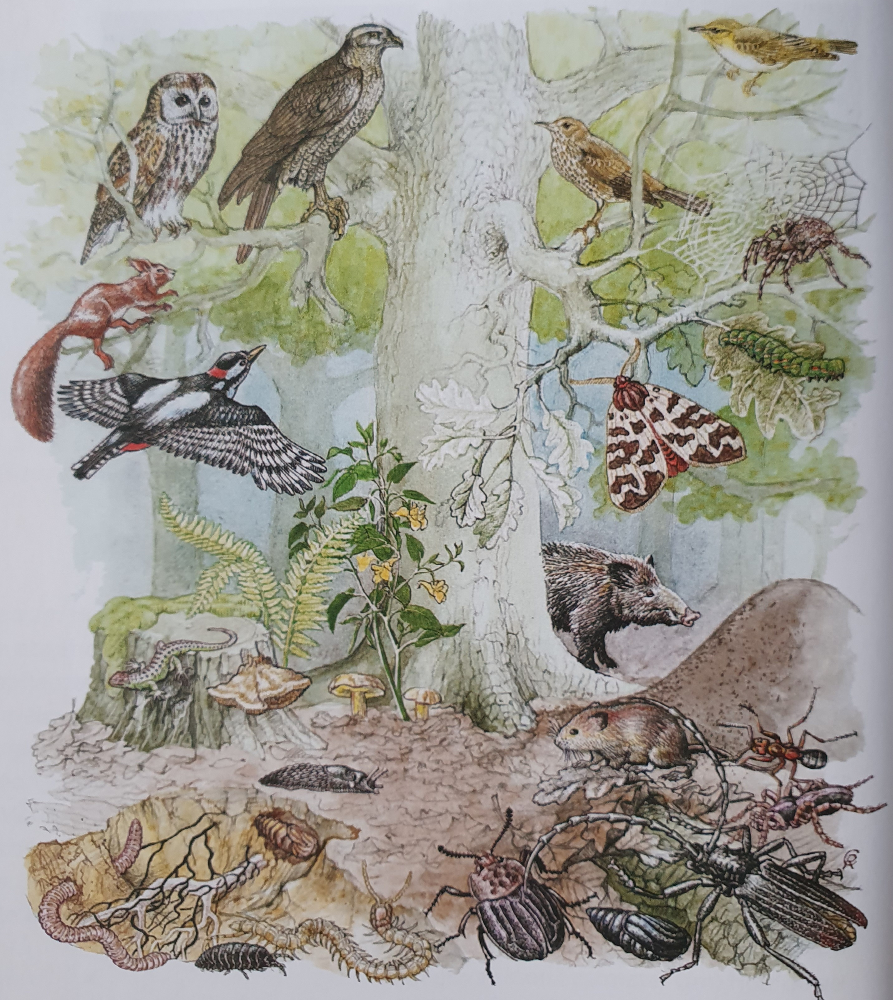
2.1. Wildschwein

Um an die Nahrung zu kommen, wühlt das Wildschwein mit der zum Rüssel verlängerten und sehr beweglichen Schnauze den Boden auf. Ist der Boden sehr hart, nimmt es seine großen, spitzen Eckzähne, die Hauer, zu Hilfe. Die aufgenommene Nahrung zerschneidet das Wildschwein anschließend mit den Schneidezähnen. Die spitzeren vorderen Backenzähne zerreißen aufgenommene Fleischteile. Gras, Eicheln und Kastanien werden mit den stumpferen hinteren Backzähnen zermahlen. Wildschweine fressen also pflanzliche und tierische Nahrung. Deshalb bezeichnet man sie als Allesfresser. Wildschweine sind tag- und nachtaktiv, das heißt sie sind rund um die Uhr auf Futtersuche. Sie können bis zu 2 m lang und 300 kg schwer werden. Außerdem sind sie ausdauernd und sehr schnell. Bei Bedrohung werden Wildschweine aggressiv. Daher sollten Menschen immer einen großen Abstand zu ihnen halten.

Beim Laufen tritt das Wildschwein nur mit der Spitze der zwei Hauptzehen auf, die mit einem schützenden Huf überzogen sind. Daher zählen Wildschweine zu den Zehenspitzengängern und Paarhufern. Zwei weitere Zehen sind verkümmert und werden Afterzehen genannt. Wenn die Tiere über schlammigen Boden laufen, spreizen sich die Hufe weit auseinander. So verhindern sie zusammen mit den Afterzehen ein Einsinken in den matschigen Untergrund.
Wildschweine legen streng voneinander getrennte Schlaf-, Fress- und Kotbereiche an. Häufig scheuern sie sich an Baumstämmen und suhlen sich in schlammigen Pfützen. So reinigen sie ihre Haut und schmieren beim Suhlen ihr Fell mit Schlamm ein. Dadurch schützen sie sich vor Insektenstichen. Da Wildschweine nicht schwitzen können, legen sie sich gern in den kühlen Schlamm. Ihr dichtes, borstiges Fell schützt schützt sie vor Kälte und Feuchtigkeit.
Wildschweine leben in Familienverbänden, den Rotten, zusammen. Eine Rotte besteht aus mehreren weiblichen Tieren, den Bachen, und zahlreichen Jungtieren, den Frischlingen. Die männlichen Tiere, die Keiler, schließen sich der Rotte erst in der Paarungszeit zwischen November und Februar an. Nach einer Tragzeit von etwa drei Monaten bringt die Bache im Frühjahr vier bis sechs Frischlinge zur Welt und säugt sie. Daher zählen Wildschweine zu den Säugetieren. Eine Gruppe von Jungtieren nach der Geburt nennt man Wurf. Die Jungtiere haben ein gestreiftes Fell und sind damit am Waldboden gut getarnt. Nach etwa sechs Monaten sind die Frischlinge selbstständig.
2.2. Übung: Schweinehaltung
In der Intensivhaltung ist das Ziel, auf möglichst kleiner Fläche mit wenig Arbeitsaufwand viele Schweine zu halten. Innerhalb von nur sechs Monaten werden die Schweine auf ein Schlachtgewicht von über 110 Kilogramm gemästet. Das bedeutet, dass so ein Mastschwein pro Tag bis zu 500 Gramm Muskelfleisch bilden muss. Geringe Bewegungsmöglichkeiten und die Fütterung von Kraftfutter führen zu diesem schnellen Wachstum. Ein Mastschwein muss auf einer Fläche von etwa einem Quadratmeter leben. Es steht auf Betonböden mit Spalten, durch die der Kot fällt und der Harn abläuft. Die Spalten drücken in die Hufe und die Schweine können mit den Hufen in den Spalten hängenbleiben. Das führt öfter zu Verletzungen. Zur Mast werden den Jungschweinen, den Ferkeln, schon kurz nach der Geburt die Ringelschwänzchen abgeschnitten, da sie sich diese sonst in der Enge der Haltung abbeißen würden. Ebenso werden die Eckzähne den Ferkeln abgeschliffen, da sie sonst die Zitzen des Muttertiers, der Sau, verletzen können. Den männlichen Ferkeln werden die Hoden entfernt.
In Biobetrieben leben Sauen und Ferkel in Freigehegen mit großem Auslauf. Hier können die Schweine suhlen und auf der Wiese nach Nahrung wühlen. Ferner verabreichen Biobauern ein besonderes Futter. Es darf genetisch nicht verändert werden und zum Anbau werden keine chemischen Pestizide benutzt. Außerdem bekommen die Tiere nur bei Bedarf Medikamente.
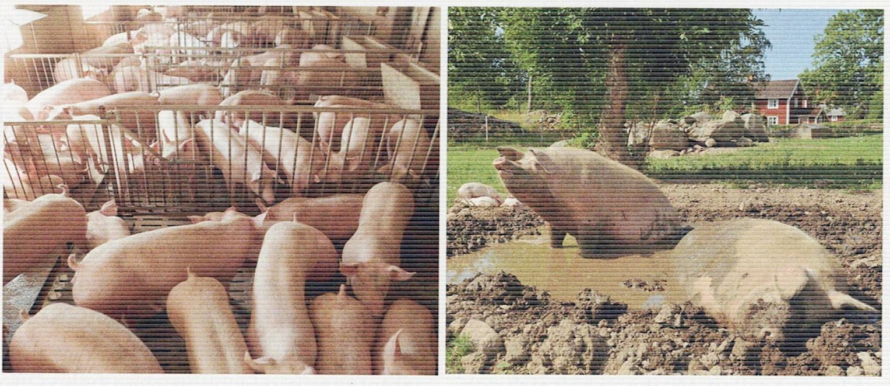
Aufgabe 1: Ordnen Sie die zwei Haltungsformen den obigen Abbildungen zu.
Aufgabe 2: Erklären Sie die Verletzungsgefahr auf den Spaltböden in der Intensivhaltung.
Aufgabe 3: Erläutern Sie, weshalb in Biobetrieben die Tierhaltung der natürlichen Lebensweise von Schweinen näher kommt.
Aufgabe 4: Stellen Sie Vermutungen an, weshalb in der Intensivhaltung viel mehr Medikamente zum Einsatz kommen als bei der Biohaltung.
Aufgabe 5: Nennen Sie Vor- und Nachteile für die Intensiv- und die Biohaltung
2.3. Lösung
Aufgabe 1:
Bild 1 = Intensivhaltung
Bild 2 = Biohaltung
Aufgabe 2:
Die Spalten drücken in die Hufe und die Schweine können mit den Hufen in den Spalten hängenbleiben. Das führt öfter zu Verletzungen.
Aufgaben 3:
In Biobetrieben kommt die Tierhaltung der natürlichen Lebensweise von Schweinen näher, da sie sich in Schlammpfützen suhlen und im Boden nach Nahrung wühlen können. Außerdem haben Sie dort viel mehr Auslauf und können ihrem Bewegungsdrang nachkommen.
Aufgabe 4:
In der Intensivhaltung verletzten sich die Tiere öfters (Spaltböden oder gegenseitige Angriffe). Diese Verletzungen werden mit Medikamenten behandelt. Außerdem leben die Tiere auf engem Raum zusammen, wodurch sich Krankheiten schnell ausbreiten können. Damit dies nicht passiert, werden die Tiere (auch manchaml gesund) zusätzlich mit Medikamenten versorgt.
Aufgabe 5:
Intensivhaltung
Vorteile: geringe Kosten, kleinere Flächen, weniger Aufwand, schnell viel Fleisch
Nachteile: Tiere leiden, kein natürlicher Lebensraum, Tiere sind oft krank, Medikamente werden im Fleisch gespeichert und gelangen somit in unsere Nahrung
Biohaltung
Vorteile: natürlichere Aufzucht, Tiere sind weniger oft krank, weniger Medikamente und Gentechnik in unserer Nahrung
Nachteile: hohe Kosten, größere Flächen werden gebraucht, aufwendiger, Fleischproduktion dauert längert und liefert weniger
2.4. Eichhörnchen


 Das Eichhörnchen paart sich im Januar und im Juni. Es hat zwei Paarungszeiten. Das Männchen wird dann vom Geruch des Weibchens angelockt. Nach der Paarung verlässt das Männchen das Weibchen und beteiligt sich nicht an der Aufzucht der Jungen. Das Weibchen bringt etwa zwei bis fünf Jungtiere zur Welt. Die nackten, unbehaarten und blinden Jungtiere sind bei der Geburt sechs Zentimeter groß und wiegen etwa zehn Gramm. Sie hocken hilflos im Kobel und werden von der Mutter versorgt. Deshalb bezeichnet man die Jungtiere als Nesthocker. Etwa sechs Wochen lang werden sie von der Mutter gesäugt. Dann haben sie ihr Fell und die Augen sind geöffnet. Jetzt verlassen die jungen Eichhörnchen den Kobel und suchen sich ihre eigenen Reviere.
Das Eichhörnchen paart sich im Januar und im Juni. Es hat zwei Paarungszeiten. Das Männchen wird dann vom Geruch des Weibchens angelockt. Nach der Paarung verlässt das Männchen das Weibchen und beteiligt sich nicht an der Aufzucht der Jungen. Das Weibchen bringt etwa zwei bis fünf Jungtiere zur Welt. Die nackten, unbehaarten und blinden Jungtiere sind bei der Geburt sechs Zentimeter groß und wiegen etwa zehn Gramm. Sie hocken hilflos im Kobel und werden von der Mutter versorgt. Deshalb bezeichnet man die Jungtiere als Nesthocker. Etwa sechs Wochen lang werden sie von der Mutter gesäugt. Dann haben sie ihr Fell und die Augen sind geöffnet. Jetzt verlassen die jungen Eichhörnchen den Kobel und suchen sich ihre eigenen Reviere.2.5. Übung: Nachwuchs von Feldhase und Wildkanninchen
Die folgende Abbildung zeigt die Jungtiere von Feldhasen und Wildkaninchen. Die Tiere auf den Bildern wurden zur selben Zeit geboren.

Aufgabe 1: Beschreiben Sie die gleich alten abgebildeten Jungtiere.
Aufgabe 2: Ordnen Sie dem Feldhasen und Wildkaninchen jeweils die Begriffe Nesthocker und Nestflüchter zu.
Aufgabe 3: Begründen Sie Ihre Zuordnung.
Aufgabe 4: Erklären Sie, weshalb der Feldhase eine längere Tragzeit als das Wildkaninchen hat.
2.6. Lösung
Aufgabe 1:
Feldhase: Die zwei Jungtiere haben Fell. Ihre Augen sind geöffnet. Sie sitzen ungeschützt auf einem Feld.
Wildkaninchen: Die sechs Jungtiere sind nackt. Ihre Augen sind geschlossen. Sie liegen dicht gedrängt in einem Nest.
Aufgabe 2:
Feldhase = Nestflüchter
Wildkaninchen = Nesthocker
Aufgabe 3:
Der Feldhase ist ein Nestflüchter, da die Jungtiere bereits voll entwickelt zur Welt kommen und sie ihr Nest sofort eigenständig verlassen können
Das Wildkaninchen ist ein Nesthocker, da die Jungtiere nach der Geburt hilflos und auf den Schutz der Eltern angewiesen sind. Sie müssen sich in ihrem geschützten Nest noch zu Ende entwickeln.
Aufgabe 4:
Der Feldhase hat eine längere Tragzeit als das Wildkaninchen, da die Jungtiere bei der Geburt weiter entwickelt sind. Die vollständige Entwicklung von Augen, Ohren und Fell nimmt mehr Zeit in Anspruch, weshalb die Tragzeit länger andauert.
3. Entstehung von Jahreszeiten
Unser Jahr ist geprägt von den Jahreszeiten: Im Frühling blühen die Bäume, im Sommer summen die Bienen, im Herbst fallen die Blätter und im Winter liegt Schnee.
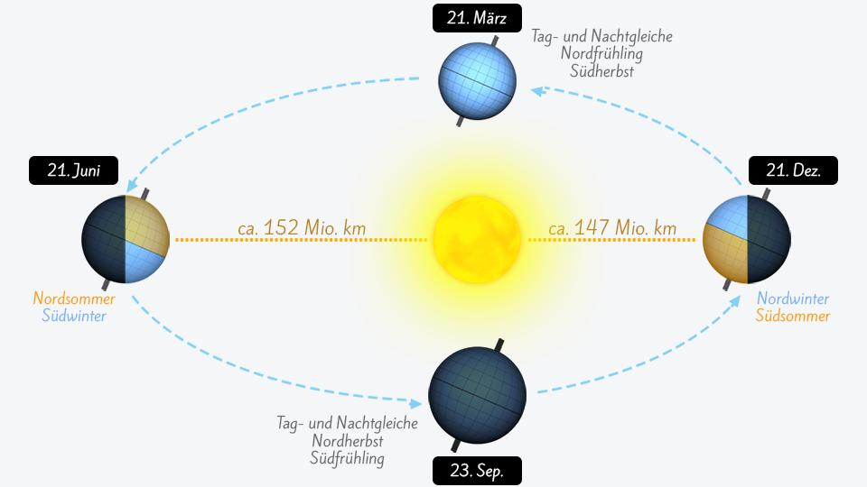
Die Jahreszeiten entstehen dadurch, dass die Erde die Sonne umkreist. Dabei treffen die Sonnenstrahlen zu unterschiedlichen Zeitpunkten der Umdrehung unterschiedlich stark auf die Erde. Da die Erdachse geneigt ist, ändert sich der Winkel und die Länge der einfallenden Sonnenstrahlen im Jahresverlauf. Je schräger die Sonnenstrahlen auf die Erdoberfläche treffen, desto weniger können sie die Erde erwärmen. Je steiler die Sonne am Himmel steht, desto wärmer ist es auch. Die Neigung der Erde ist gleichzeitig auch dafür verantwortlich, wie lang unsere Tage sind. Je länger die Sonne tagsüber scheint, desto besser kann sich die Erde erwärmen. Lange Tage und ein steiler Einfallswinkel der Sonnenstrahlen führen also zu warmen Temperaturen - es ist Sommer.
Unser frostig kalter Winter bedeutet eine Abnahme von Licht und Wärme für die Tiere und Pflanzen. Im Sommer müssen sie mit hoher Sonneneinstrahlung und so mit teils starker Hitze und Trockenheit zurechtkommen. An diese Jahreszeiten müssen sich die Pflanzen und Tiere anpassen. Dabei sind im Laufe der Zeit ganz unterschiedliche Strategien entstanden.
4. Tiere in den Jahreszeiten
Der Winter stellt Tiere vor besondere Herausforderungen. Tiefe Temperaturen erschweren Lebensvorgänge wie Bewegung und Stoffwechsel. Ein besonderes Problem für Wirbeltiere besteht darin, dass viele Nahrungspflanzen und Beutetiere im Winter nicht erreichbar sind. Der Winter ist deswegen für viele Tiere eine Zeit, in der sowohl lebensbedrohliche Kälte als auch Knappheit an Nahrung herrschen.
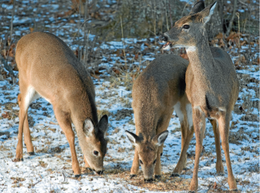
Info:
Wechselwarm ist das Gegenteil von gleichwarm und bedeutet, dass Tiere ihre Körpertemperatur nicht regulieren
können. Die Körpertemperatur passt sich an die Außentemperatur an.
Viele andere Tiere haben mit den kalten Temperaturen und der wenigen Nahrung im Winter zu kämpfen und nutzen verschiedene Überwinterungsstrategien um diese für sie schwierige Zeit zu überstehen. Dabei wird zwischen drei Überwinterungsstrategien und der Winterflucht unterschieden.
4.1. Winterschlaf
.png) Im
Winter ist es draußen kalt und es gibt nur wenig Futter. Deshalb halten
viele Tiere in dieser Zeit Winterschlaf.
Im
Winter ist es draußen kalt und es gibt nur wenig Futter. Deshalb halten
viele Tiere in dieser Zeit Winterschlaf.
Sie suchen sich dazu einen frostgeschützten Platz. Zum Beispiel ziehen sie sich in eine Höhle zurück. Ihr Nest haben sie dabei mit Material wie Gras oder Wolle isoliert.
Die Körpertemperatur des Tiers sinkt, Atmung und Herzschlag werden langsamer. So verbrauchen die Tiere weniger Energie und können über mehrere Monate schlafen ohne zu fressen. Meist haben sie sich auch schon im Herbst einen Fettvorrat angefressen, von dem sie im Winter leben.
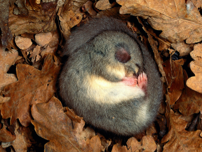
Nach einer bestimmten Zeit wachen die Winterschläfer kurz auf und erhöhen ihre Körpertemperatur kurzfristig auf Normaltemperatur, bevor sie sie erneut absenken. Die kurzen Phasen mit Normaltemperatur sind wichtig, damit das Gehirn auch während des Winters funktionsfähig bleibt. Außerdem nutzen sie die kurze Wachephase um sich zu entleeren.
Werden die Winterschläfer aber zu oft geweckt, kostet das viel Energie und könnte lebensgefährlich für sie sein.
Beispiele: Igel (Bild 1), Siebenschläfer (Bild 2), Murmeltiere und Fledermaus
4.2. Winterruhe
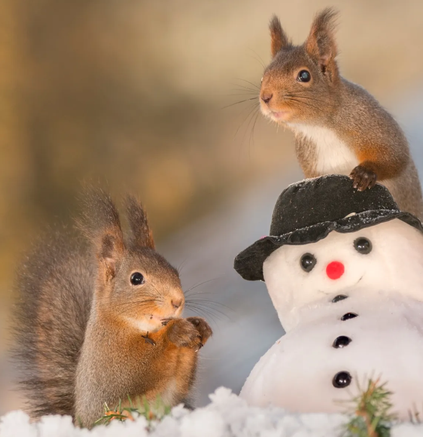
Gleichwarme Tiere wie Braunbären
oder Eichhörnchen halten dagegen nur Winterruhe. Dafür ziehen sie
sich in frostgeschützte Höhlen zurück.
Die Tiere schlafen nicht so fest
und werden mehrmals zwischendurch wach, um zu fressen oder um sich
anders hinzulegen.
Während Bären ohne Nahrung
auskommen, müssen Eichhörnchen auch während der Winterruhe immer wieder
fressen. Allerdings nur etwa halb so viel wie im Sommer. Dazu nutzen sie
Vorräte mit Nüssen und anderen Früchten, die sie im Herbst angesammelt
haben.
Je kälter es ist und je weniger Nahrung sie finden können, desto länger ruhen die Tiere. Diese Ruhephasen helfen ihnen Energie zu sparen und sie benötigen dadurch weniger Nahrung.
Bei der Winterruhe nehmen Herzschlag und Atmung nur geringfügig ab. Anders als beim Winterschlaf sinkt die
Körpertemperatur nur minimal.
Beispiele: Eichhörnchen, Bär, Dachs
4.3. Winterstarre
.png) Wechselwarme Tiere, wie zum Beispiel Amphibien (Frösche, Lurche,...), Insekten und
Wechselwarme Tiere, wie zum Beispiel Amphibien (Frösche, Lurche,...), Insekten und
Reptilien (Schildkröte, ...) können ihre Körpertemperatur nicht aktiv regeln. Ihre Körpertemperatur entspricht der Umgebungstemperatur. Mit sinkender Aussentemperatur werden Amphibien und Reptilien immer träger und starr. Sie fallen in die sogenannte Winterstarre oder Kältestarre.
Bei starkem und langem Frost erfrieren diese Tiere. Schon im Herbst suchen sie daher frostfreie Verstecke zur Überwinterung auf. Der Wasserfrosch überwintert zum Beispiel am Grund von tieferen Seen. Hier liegt die Temperatur immer etwas über dem Gefrierpunkt. Andere Amphibien und Eidechsen überwintern in frostfreien Erdlöchern und Spalten.
Die
Körper der Tiere erstarren, wenn die Temperaturen sehr niedrig sind. Dadurch verbrauchen sie dann kaum noch Energie. Die Winterstarre ist
erst dann vorbei, wenn es wieder wärmer wird. Vorher können die Tiere
nicht aufwachen, sie können sich nicht bewegen
und daher auch nicht fressen.
Tiere
in Winterstarre atmen sehr wenig und der Herzschlag sinkt stark ab. Die
Körpertemperatur sinkt mit den kalten Außentemperaturen. Im Gegensatz
zu Winterschläfern können Tiere in der Winterstarre auch Temperaturen
unter 0 Grad Celsius (unter dem Gefrierpunkt) überleben. Um nicht zu
erfrieren, haben die Tiere eine Art Frostschutz im Körper. Der
Frostschutz schützt die Flüssigkeiten im Körper, wie beispielsweise das
Blut, davor einzufrieren.
Der Eisfrosch lebt im Norden der USA und in Kanada. Er kann sich sogar teilweise einfrieren lassen, ohne zu sterben.
4.4. Übung: Überwinterungsstrategien
Aufgabe 1: Lesen Sie die drei vorherigen Kapitel zu Wintschlaf, Winterruhe und Winterstarre.
Aufgabe 2: Übertragen Sie anschließend die folgende Tabelle in Ihr Heft und ergänzen Sie diese.
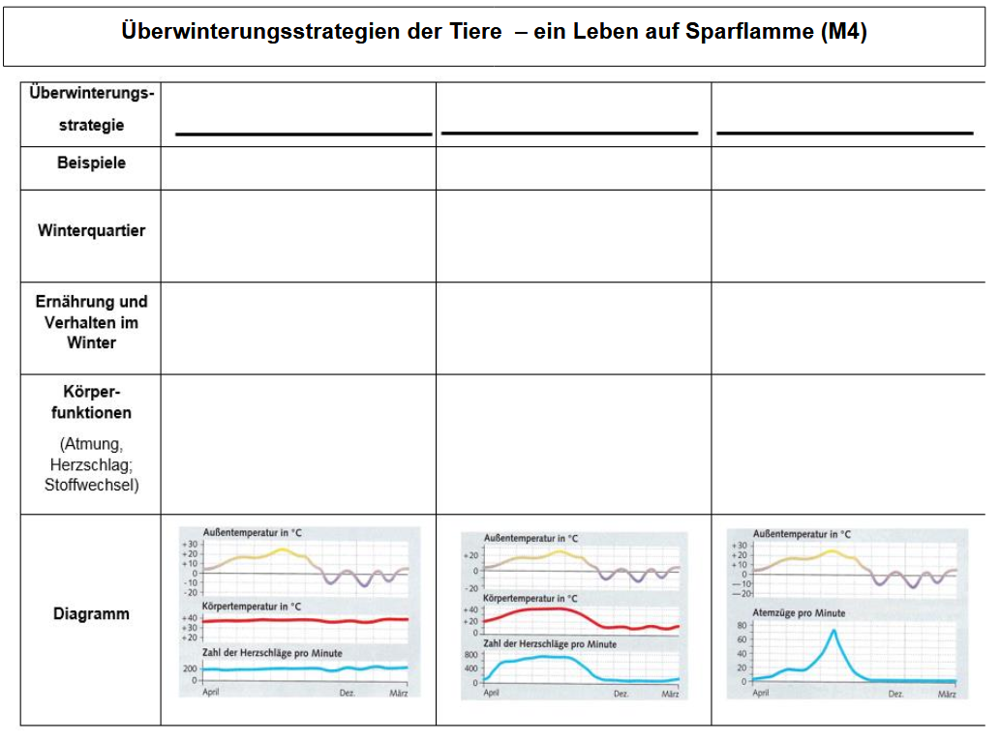
4.5. Lösung
.png)
4.6. Winterflucht
.png) Die Winterflucht kennen wir von den Zugvögeln. Sie fliehen vor der Kälte in Richtung Süden.
Die Winterflucht kennen wir von den Zugvögeln. Sie fliehen vor der Kälte in Richtung Süden.
So ziehen z. B. Mitte September etwa 300.000 Kraniche (Bild) Richtung Mittelmeer.
Informieren Sie sich gerne auf der Internetseite des NABU über die verschiedenen Zugvögelarten.
Beispiele: Storch, Kranich, Gänse
5. Nahrungsbeziehungen
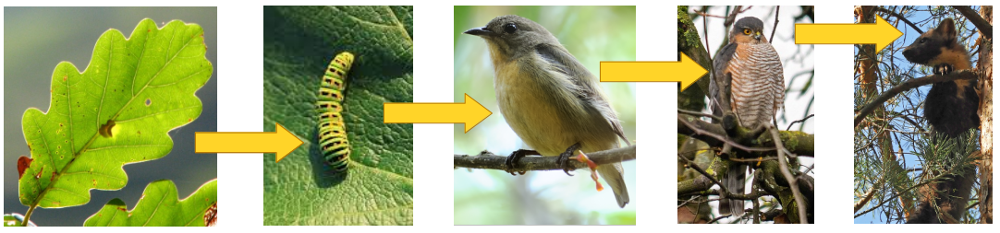
Zwischen den Lebewesen des Waldes bestehen Nahrungsbeziehungen. Die einfachsten Beziehungen bezeichnet man als Nahrungsketten. Sie wird immer linear (in einer Reihe) und mit Pfeilen angegeben.
Am Anfang einer Nahrungskette steht immer eine grüne Pflanze, weil nur sie aus Wasser und Kohlenstoffdioxid mithilfe des Sonnenlichtes Nährstoffe wie Traubenzucker und Energie herstellen kann. Diese Nährstoffe sind Nahrungsgrundlage für die meisten anderen Lebewesen. Deshalb werden grüne Pflanzen auch als Produzenten (Erzeuger) bezeichnet.
Alle nachfolgenden Glieder einer Nahrungskette können selbst keine Nährstoffe herstellen. Sie müssen also mit der Nahrung aufgenommen werden. Man bezeichnet Lebewesen, die sich so ernähren, als Konsumenten (Verbraucher). Die ersten Verbraucher in einer Nahrungskette sind Pflanzenfresser wie Hasen, Rehe, einige Vögel und viele Insekten. Sie heißen Erstkonsumenten (Konsumenten 1. Ordnung), weil sie die in den Pflanzen gebildeten Nährstoffe als erste Konsumenten aufnehmen. Von ihnen ernähren sich Fleischfresser wie Marder, Fuchs, viele Sing- und alle Greifvögel. Frisst ein kleiner Vogel beispielsweise eine Raupe, so ist er Zweitkonsument (Konsument 2. Ordnung). Ein Greifvogel, der den kleineren Vogel erbeutet, ist dann ein Drittkonsument (Konsument 3. Ordnung). Das letzte Glied einer Nahrungskette wird auch als Endkonsument bezeichnet.
Wenn Pflanzen oder Tiere Nahrungsreste ausscheiden oder sterben, zersetzen kleinere Tierchen am Waldboden wie Käfer und Würmer sowie Pilze diese Stoffe. Diese Lebewesen heißen Destruenten (Zersetzer). Sie sorgen somit dafür, dass neue Erde und Nährstoffe gebildet werden, welche die Produzenten zum Wachsen benötigen. So schließt sich der Kreis.
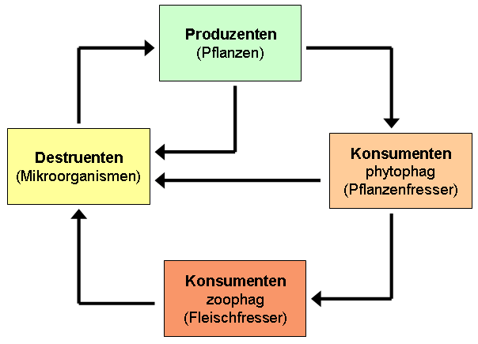
In Wirklichkeit sind die Beziehungen zwischen den Lebewesen eines Waldes noch viel verzweigter. So ernähren sich die kleineren Vögel nicht nur von Raupen, sondern auch von anderen Insekten und Larven. Noch vielfältiger gestaltet sich der Speisezettel von Wildschweinen. Sie fressen Wurzeln, Eicheln, Bucheckern, verschiedene Pflanzen, Schnecken, Maden, Mäuse und auch Aas. Wie Hausschweine gehören sie zu den Allesfressern. Die einzelnen Nahrungsketten sind so miteinander verknüpft, dass ein Nahrungsnetz entsteht. Solch eine Darstellung lässt ahnen, wie vielfältig und verzweigt die Beziehungen der Lebewesen untereinander in Wirklichkeit sind. Das Nahrungsnetz im Wald ist ein Beispiel für die vielfältigen Wechselwirkungen zwischen verschiedenen Lebewesen und ihrer Umwelt. Je vielfältiger der Speisezettel eines Tieres ist, umso mehr Wechselwirkungen ergeben sich zu den anderen Lebewesen.
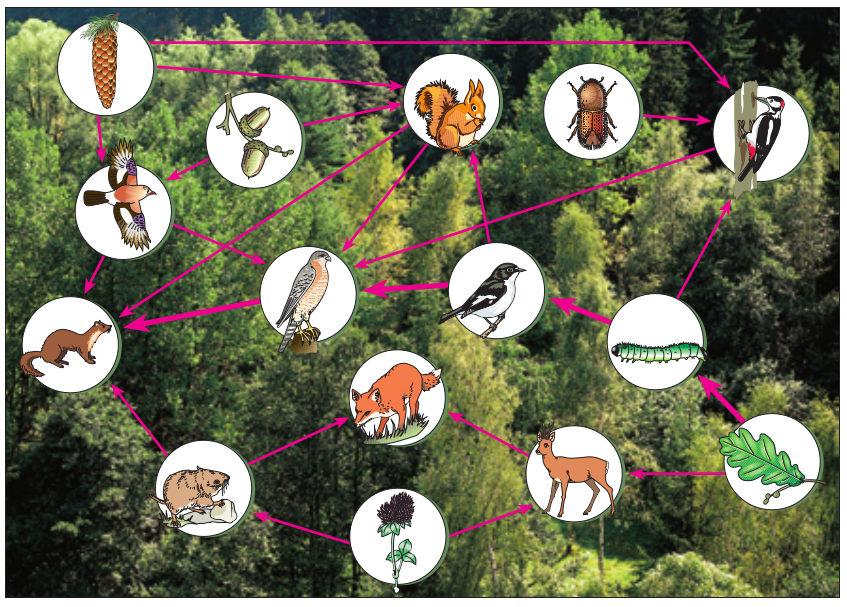
Hier ein Video, das die Informationen noch einmal zusammenfasst:
5.1. Übung

Aufgabe 1: Geben Sie eine dreigliedrige und eine viergliedrige Nahrungskette an.
Aufgabe 2: Erklären Sie den Begriff Produzent und nennen Sie zwei Beispiele.
Aufgabe 3: Erklären Sie die Begriffe Erstkonsument, Zweitkonsument und Endkonsument. Nennen Sie jeweils zwei Beispiele.
5.2. Übung
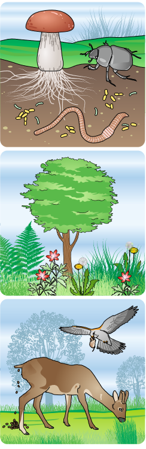
6. Zellen
Menschen, Tiere und Pflanzen sind aus vielen verschiedenen Zellen aufgebaut. Beim Menschen sind dies mehr als 50 Milliarden Zellen.
Zellen können ganz unterschiedlich aussehen und verschiedene Funktionen haben. Zellen mit gleicher Funktion sind zu einem Gewebe (z. B. Nerven- und Muskelgewebe) verbunden.
Verschiedene Gewebe arbeiten oft zusammen und bilden ein Organ. Pflanzliche Organe sind beispielsweise Blatt, Blüte oder Wurzel.
Die Gesamtheit aller Organe ergibt den Organismus.
Zelle, Gewebe, Organ und Organismus nennt man die Organisationsstufen (Organisationsebenen) eines Lebewesens.
Besipiel 1: Organisationsstufen eines Baumes
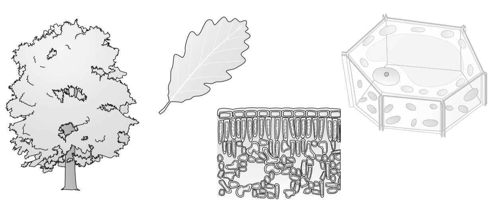
Beispiel 2: Organisationsstufen eines Menschen
.png)
Den Aufbau eines Organismus können Sie sich unter folgendem Link noch einmal veranschaulichen:
https://static.klett.de/software/shockwave/prisma_bio_ol/pb_pbni02ov201/index.html (bitte die Reiter anklicken)
6.1. Tier- und Pflanzenzellen
Pflanzenzellen
Nach außen ist jede Zelle durch eine starre Zellwand abgegrenzt. Sie verleiht der Zelle Festigkeit und gibt ihr ihre Form. Außerdem dient sie dem Schutz der Zelle. Auf die Zellwand folgt nach Innen die dünne Zellmembran. Sie lässt nur bestimmte Stoffe in die Zelle rein oder hinaus und reguliert so den Stoffaustausch mit Umgebung. Hinter der Zellmembran befindet sich eine zähflüssige Masse, das Zellplasma oder Cytoplasma genannt wird. Im Zellplasma liegt der Zellkern. In ihm befinden sich alle wichtigen Informationen zur Steuerung der Lebensvorgänge. Für die grüne Farbe der Pflanzen sind die Chloroplasten verantwortlich, die auch im Cytoplasma vorliegen. Verantwortlich dafür ist der Farbstoff Chlorophyll. Nicht jede Pflanzenzelle besitzt Chloroplasten, nur die grünen Bestandteile. Unter Einwirkung von Lichtenergie findet im Chloroplasten die Fotosynthese statt. Ebenfalls im Zellplasma liegen die im Mikroskop nicht sichtbaren, sehr kleinen Mitochondrien. Sie sind die Kraftwerke der Zellen, da sie beim Abbau von Glukose Energie freisetzen. Einen großen Teil der Zelle nimmt die mit Wasser gefüllte Vakuole ein. Sie sorgt für die Stabilität der Zelle und dient als Speicherort für verschiedene Stoffe und Abfallprodukte.
Tierzellen
Alle Zellen werden von einer Zellmembran umhüllt, die das Cytoplasma von der Umgebung trennt. Im Zellplasma laufen viele wichtige Stoffwechselprozesse ab. Für diese benötigt jede Zelle Energie. Die dafür zuständigen Mitochondrien liegen ebenfalls im Cytoplasma. Außerdem haben alle Zellen, mit Ausnahme der roten Blutzellen, einen Zellkern. Dieser enthält die Erbsubstanz mit der dort gespeicherten Erbinformation. Für die Stabilität des Körpers sorgt bei Menschen und Tieren das Skelett aus Knochen. Ihre Zellen haben keine Zellwand oder Vakuolen, die diese Aufgabe übernehmen.

6.2. Zellen 2
Unterschiedlichen Zellen haben ganz verschiedene Aufgaben zu erfüllen. Sie können Nährstoffe aufnehmen, Glukose in Energie umwandeln und sie können sich durch Zellteilung selbst vermehren. Je nachdem in welchen Lebenwesen und Organen sich die Zellen befinden und welche Aufgaben sie dort haben, können sie ganz unterschiedlich aussehen.
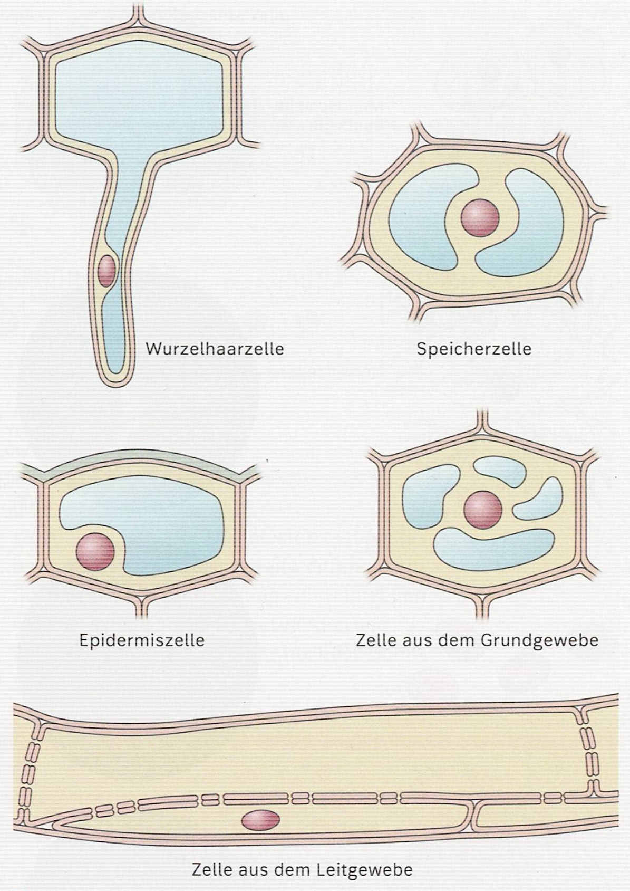 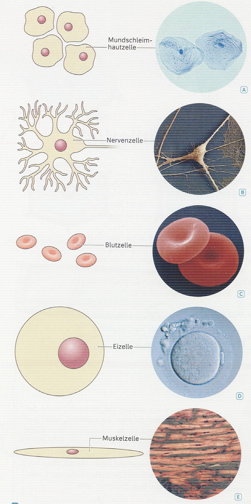